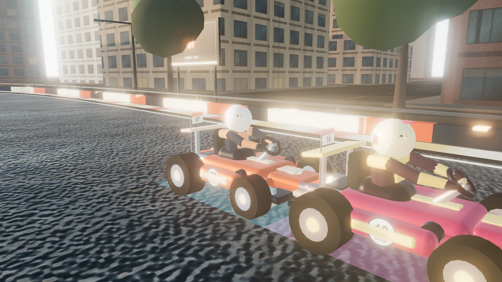
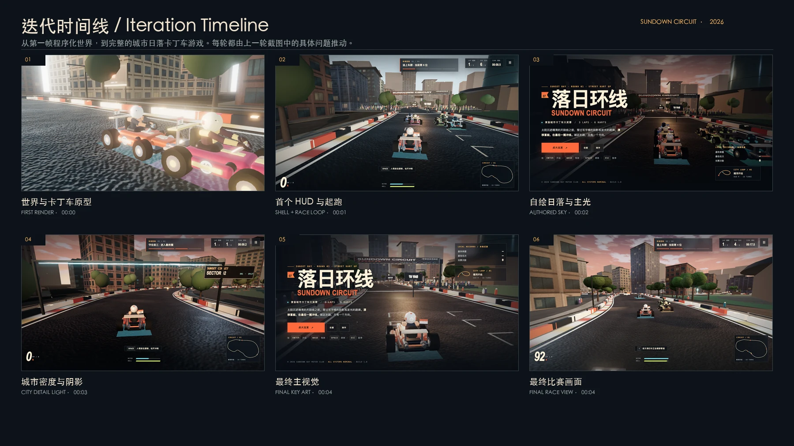
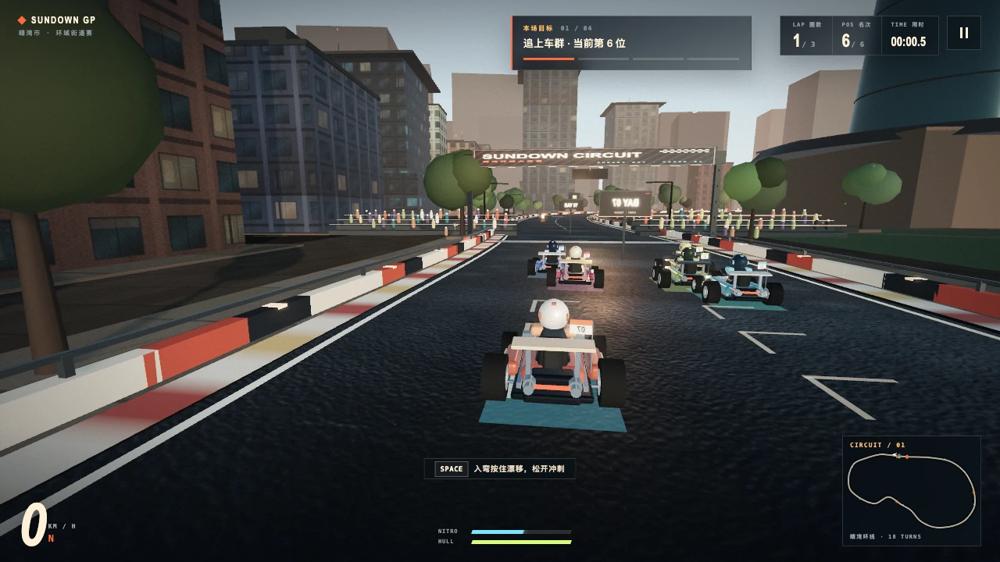
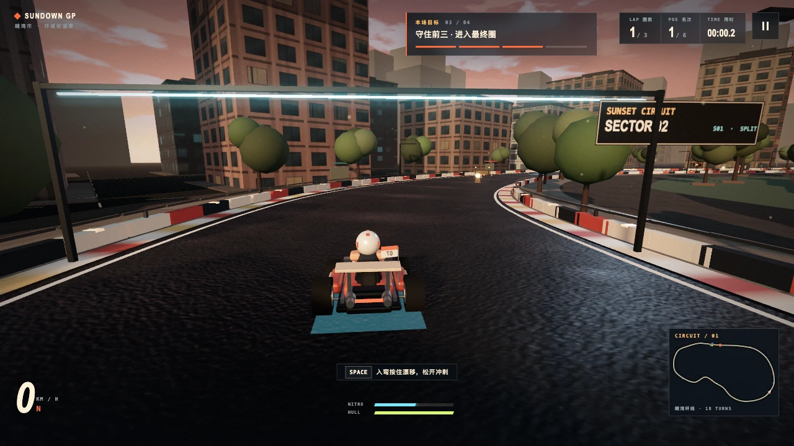
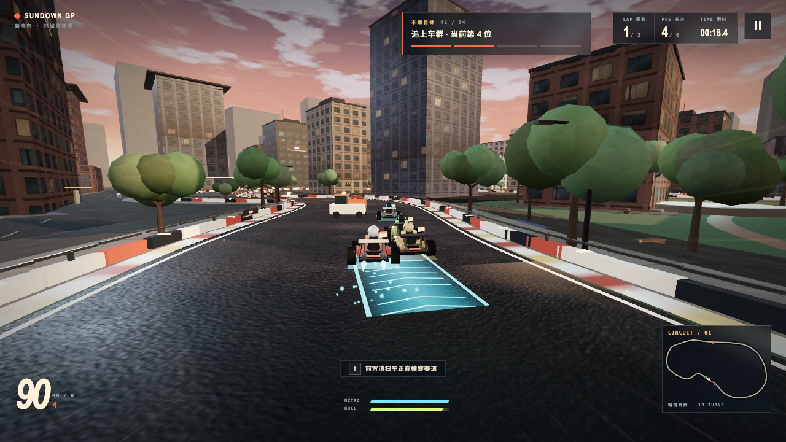
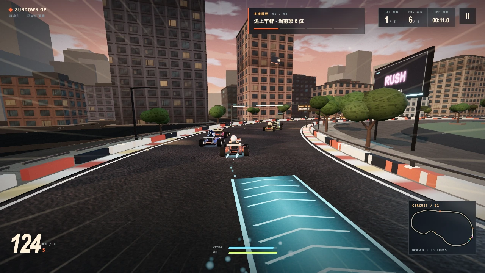
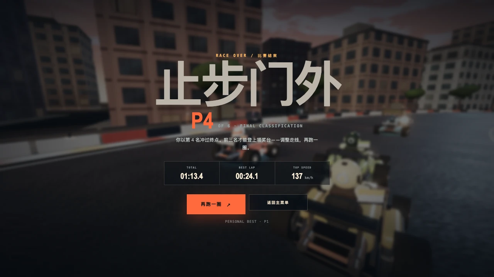

01
先让世界与驾驶成立
先搭出 860 米闭环、程序化街区、卡丁车、发车格、键盘驾驶、三圈目标和基础 HUD。真车速度、阴影和天际线都还很原始，但完整闭环已经可跑。

FIRST RENDER · prototype light / first chase camera没有参考图，没有外部模型、贴图、字体或录音。一个闭环赛道、六台程序化卡丁车、一座城市和一套比赛规则，被逐轮做成一个 HTML。下面保留每一轮实际运行截图与修改理由。
photoreal-game本项目按 photoreal-game skill 的工程顺序推进：先做完整可玩的产品外壳，再进行固定机位截图、主光/材质/城市密度迭代，随后验证碰撞、实机试玩、移动端与性能，并为每一轮保存证据。Skill 是流程与验收纪律，不是素材包；最终游戏里的城市、车辆、UI、纹理和声音全部为本项目原创代码生成。视觉风格选择“电影感街机”而非照片复刻，因此不套用真实照片参考 profile。
每一轮只针对上一张图中最明显的问题做一类改动，然后再次截图验证。

先搭出 860 米闭环、程序化街区、卡丁车、发车格、键盘驾驶、三圈目标和基础 HUD。真车速度、阴影和天际线都还很原始，但完整闭环已经可跑。

FIRST RENDER · prototype light / first chase camera第一张实机 HUD 截图暴露了灰天空、平光、过曝高光与廉价沥青。于是编写自己的天空穹顶、云层和太阳盘；统一太阳方向、阴影相机、PMREM 环境光、ACES 曝光与 Bloom，重新排布 HUD。

FIRST HUD · before the authored sky pass加入 9 个街边店铺、屋顶招牌、观众、灯池、树冠叶片、护栏广告、清扫车、施工路障、太阳能电池与导光带；同时把 AI、最后一圈、失败路径、小地图和触控布局补齐。标题从车群中裁出一台 07 号车作为英雄。

AUTHORED SKY · records moved above the road发现空气阻力误乘了帧数，导致极速只有 ~9 km/h；修正后全自动巡航才能真实完成三圈。随后补上头盔面罩、后脑号码、尾翼端板、树冠细节、移动端刹车键位和单文件离线构建，并用实机状态验证胜利/失败/退赛/重开。

FINAL RACE · real gameplay, not a staged still所有画面、HUD、粒子和云层均来自游戏实际运行。




自动巡航通过真实游戏循环运行，没有跳过物理、碰撞、圈数或结算。
标题、发车灯、3 圈、漂移、氮气、两类危险物、最终圈、暂停、设置、胜利、失败、DNF、重开与返回菜单。
车辆由中心线投影和横向限制约束；清扫车、路障、对手都有独立碰撞。自动巡航可以完整通过全部三圈。
单文件 880 KB；所有贴图、模型、字体、粒子与音频均由代码生成。无统计、无分析、无个人数据，可直接用 file:// 打开。
860 米 · 18 个弯 · 3 圈 · 6 台卡丁车 · 一个 HTML。